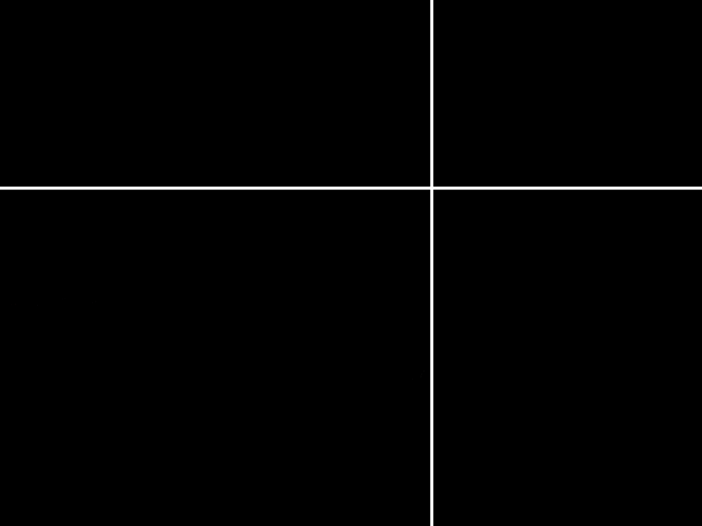
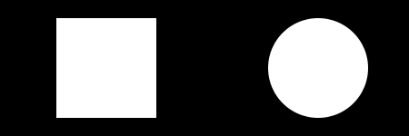

Grafik- & UI-Design
Eine Einführung für Entwickler
4 Aussagen
zu Design
Features sind wichtiger als Bedienbarkeit
Aus guten Anwendungsdesign folgt gutes UI-Design
Funktionalität ist die Summer der Möglichkeiten
Design ist kein Entscheidungskriterium
Features sind wichtiger
als Bedienbarkeit
Was schwer zu bedienen ist — wird nicht genutzt.
Features die nicht genutzt werden — sind wertlos.
Aus guten Anwendungsdesign
folgt gutes UI-Design
Benutzer denken in Funktionen nicht in Abläufen
Ziele guten Anwendungsdesigns:
Redundanzvermeidung, Abstraktion, Wartbarkeit
Ziele guten UI-Design:
Intuitivität, kurze Wege, Übersichtlichkeit
Funktionalität ist die Summer der Möglichkeiten
Die Funktionalität ist User-bezogen
Nur was der User nutzt ist für ihn Funktionalität
Design ist kein Entscheidungskriterium
Der Ersteindruck entsteht in den ersten 7 Sekunden
Er entscheidet über das ob
Die Funktionalität nur noch über ob nicht
Design
Design = Gestaltung = Formgebung
Auseinandersetzung mit:
Funktion eines Objekts
Interaktion mit einem Benutzer
Funktion
Funktion = eine zu erfüllende Aufgabe
Beschreibbar als Schnittstelle zwischen zwei Objekten
Anwendung ⇔ Benutzer
Funktion ≅ Benutzerinterface
Benutzer
Ohne Benutzer keine Anwendung
Selbst Automatisierung
dient dazu, dass es der Benutzer nicht tun muss
Es gibt mehr als einen Benutzer
Unterschiedliche Ziele, Fähigkeiten und Restriktionen
Erstbenutzer ↔ Poweruser
Mausbediener ↔ Tastaturjokeys
Fremdsprachler ↔ Behinderte
Gutes Design
- macht ein Produkt brauchbar
- macht ein Produkt verständlich
- ist ästhetisch
- ist unaufdringlich
- ist konsequent bis ins letzte Detail
- ist so wenig Design wie möglich
Goldene Regeln
- Fokus auf Benutzer
- Durchdachte, gute Navigation
- 80/20-Regel
20% der Funktionen werden zu 80% der Zeit genutzt
- 80/20-Regel
- Einheitlichkeit
Ähnliche Funktion → Ähnliches Verhalten / Aussehen - Unterscheidbarkeit
Andere Funktion → Anderes Verhalten / Aussehen - Weniger ist mehr
Formbeziehung
Schwerpunktbildung
Optische Mitte
Format / Proportion
Format / Goldener Schnitt
Kontrast — Rhytmus — Dynamik
Schwerpunktbildung

Optische Mitte


Format / Proportion
DIN A-Format — 1 : √ 2 = 5 : √ 7

| DIN A0 | 841 mm x 1189 mm | ≈ 1 m² |
| DIN A1 | 594 mm x 841 mm | |
| DIN A2 | 420 mm x 594 mm | |
| DIN A3 | 297 mm x 420 mm | |
| DIN A4 | 210 mm x 297 mm | (Deutsches Briefformat) |
| DIN A5 | 148 mm x 210 mm | |
| DIN A6 | 105 mm x 148 mm | |
| DIN A7 | 74 mm x 105 mm | |
| DIN A8 | 52 mm x 74 mm | |
| DIN A9 | 37 mm x 52 mm | |
| DIN A10 | 26 mm x 37 mm |
Format / Goldener Schnitt

(A+B)/A = A/B oder AC zu AB = CB zu AC
1 : φ (≈ 1,618)
Format / Goldener Schnitt
|  |  |
Format / Goldener Schnitt
 |
|
Formwirkung
|  |  |
 |
 |
Benutzerführung
...
Eyetracking
Eyetracking-Bild
»Präzenz« der Bereiche
Bild der Bereichseinteilung
Führung des Auges
Beeinflussung des Sehens
http://diagnosite.com
http://www.wearepandr.com
http://google.com
...
Farbe
Die Farbe ist eine Sinneswahrnehmung, die sich nur auf die optische Erscheinung bezieht.